一、Android 开发环境搭建
安装工具与构建基础
Android Studio
开发工具使用 Android Studio，可以从官方网站下载。官网同时提供安装和基础使用教程。
Gradle、Maven 与 Groovy
Java 源码需要经过编译，Android 项目也需要经过构建才能生成 APK。普通 Java 项目经常使用 Maven，而 Android 官方项目主要使用 Gradle。
两者的核心差异可以简单理解为：
- 配置方式：Maven 使用 XML 编写 POM；Gradle 可以使用 Groovy DSL 或 Kotlin DSL。
- 构建方式：Gradle 支持增量构建和构建缓存，适合模块较多的 Android 工程。
- 扩展能力：Gradle 的插件体系更灵活，Android Gradle Plugin 也是 Android Studio 构建项目的核心。
Groovy 是运行在 JVM 上的动态语言，可以直接调用 Java 类。这里暂时只需要知道：旧版 Android 项目中的 build.gradle 常用 Groovy DSL 编写。
配置 SDK 与环境变量
Android Studio 安装完成后，如果 SDK 下载失败，可以为 Android SDK 配置镜像源，或者在网络能够正常访问官方服务时直接通过 Android Studio 下载。
SDK 安装完成后，需要确认下面两个位置：


将 SDK 路径和包含 adb 的 platform-tools 路径加入环境变量，方便在终端中直接调用 Android 调试工具。
创建并调试项目
在 Android Studio 中新建项目，选择 Empty Views Activity。本文使用 Java 和传统 XML View，因此先不选择 Compose 模板。
项目第一次打开时会下载 Gradle 和相关依赖。如果没有配置镜像源，需要保证网络可以访问对应仓库。

使用模拟器调试
打开 Android Studio 的 Device Manager，创建一个适合当前项目 API 版本的虚拟设备，然后启动模拟器运行应用。

使用实体机调试
实体机无需 Root。打开开发者模式和 USB 调试后连接电脑，先确认 ADB 已经识别设备：
adb devices
需要在电脑上镜像和控制手机屏幕时，可以安装并运行 scrcpy：
winget install --exact Genymobile.scrcpyscrcpy
设备连接成功后，也可以直接在 Android Studio 中选择实体机进行运行和调试。
二、Android APK 目录结构
Project 与 Android 视图
Android Studio 提供两种常用的项目视图：
- Project 视图：按照磁盘上的真实目录结构展示文件，适合查找构建脚本和完整路径。
- Android 视图：按照 Android 开发用途重新归类文件，日常编写代码和资源时更直观。


Project 目录速查
下面按真实目录结构列出一个常见 Android 项目的主要文件。实际项目会因为 Android Studio 和 Gradle 版本不同而略有差异。
Android 项目目录结构
│
├─ .gradle/ # Gradle 自动生成的缓存目录，一般不用手动修改
├─ .idea/ # Android Studio 的项目配置目录，一般不用手动修改
│
├─ app/ # app 模块，Android 开发最主要的工作目录
│ │
│ ├─ build/ # 编译生成的文件，可删除，重新编译后会自动生成
│ │
│ ├─ libs/ # 本地依赖库，例如 .jar / .aar 文件
│ │
│ ├─ src/ # 源代码目录，非常重要
│ │ │
│ │ ├─ main/ # APP 主程序代码
│ │ │ │
│ │ │ ├─ java/ # Java / Kotlin 源代码
│ │ │ │ └─ com.example.xxx/
│ │ │ │ └─ MainActivity.java
│ │ │ │
│ │ │ ├─ res/ # Android 资源目录
│ │ │ │ │
│ │ │ │ ├─ drawable/ # 图片、Shape、Vector Drawable 等资源
│ │ │ │ │
│ │ │ │ ├─ layout/ # XML 页面布局文件
│ │ │ │ │ └─ activity_main.xml
│ │ │ │ │
│ │ │ │ ├─ mipmap-mdpi/ # mdpi 启动器图标
│ │ │ │ ├─ mipmap-hdpi/ # hdpi 启动器图标
│ │ │ │ ├─ mipmap-xhdpi/ # xhdpi 启动器图标
│ │ │ │ ├─ mipmap-xxhdpi/ # xxhdpi 启动器图标
│ │ │ │ ├─ mipmap-xxxhdpi/ # xxxhdpi 启动器图标
│ │ │ │ ├─ mipmap-anydpi-v26/ # 自适应启动器图标
│ │ │ │ │
│ │ │ │ ├─ values/ # 字符串、颜色、主题等配置
│ │ │ │ │ ├─ strings.xml
│ │ │ │ │ ├─ colors.xml
│ │ │ │ │ └─ themes.xml
│ │ │ │ │
│ │ │ │ └─ xml/ # 其他 XML 配置文件
│ │ │ │
│ │ │ └─ AndroidManifest.xml # APP 清单配置文件
│ │ │ # 配置组件、权限、应用信息等
│ │ │
│ │ ├─ androidTest/ # Android 设备/模拟器测试代码
│ │ └─ test/ # 本地单元测试代码
│ │
│ ├─ .gitignore # app 模块 Git 忽略配置
│ ├─ build.gradle.kts # app 模块的 Gradle 构建配置，非常重要
│ └─ proguard-rules.pro # R8 / 代码压缩混淆相关规则
│
├─ gradle/
│ └─ wrapper/
│ ├─ gradle-wrapper.jar
│ └─ gradle-wrapper.properties # Gradle Wrapper 版本配置
│
├─ .gitignore # 整个项目的 Git 忽略配置
├─ build.gradle.kts # 项目级 Gradle 构建配置
├─ settings.gradle.kts # 项目与模块配置
├─ gradle.properties # Gradle 全局项目配置
├─ gradlew # Linux / macOS Gradle Wrapper
├─ gradlew.bat # Windows Gradle Wrapper
└─ local.properties # 本机环境配置，例如 Android SDK 路径三、自己的第一个 Android App
先看懂应用运行流程
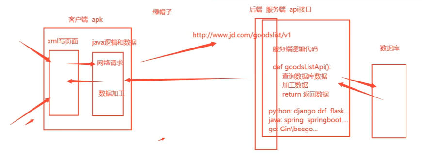
一个需要访问后端的 Android 应用，大致会经历下面几个步骤：
- 用户打开 App，首先看到由 XML 描述的页面布局。
- 用户触发操作后，Java 或 Kotlin 代码通过 HTTP/HTTPS 请求服务端 API。
- 后端处理业务逻辑，并在需要时读取数据库中的数据。
- 后端返回结果，客户端代码解析数据并更新界面。
从逆向角度看，APK 中的 XML 资源、Java/Kotlin 逻辑和网络接口，正是分析应用行为的重要入口。
制作图片切换应用
这一节做一个简单的图片切换器：页面中显示一张图片，点击按钮后切换到下一张。
编写 XML 页面布局
在 Android 视图中打开 res/layout/activity_main.xml。XML 编辑器通常提供 Code、Split 和 Design 三种视图，不同版本的按钮位置可能略有差异。
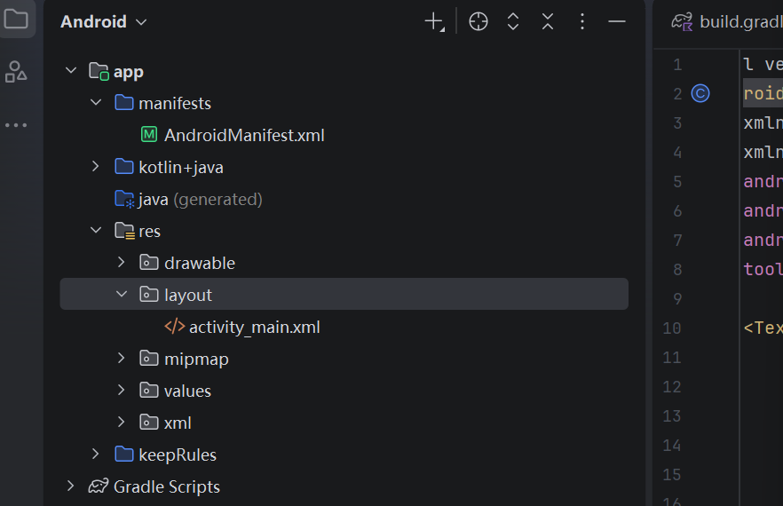
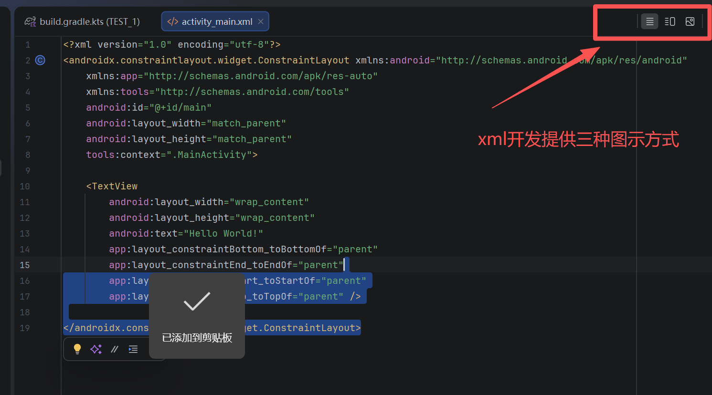
先看一下最终要实现的效果：
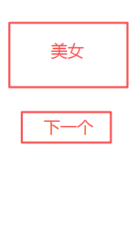
首先用纵向的 LinearLayout 搭建页面根布局：
<?xml version="1.0" encoding="utf-8"?>
<LinearLayout
xmlns:android="http://schemas.android.com/apk/res/android"
xmlns:app="http://schemas.android.com/apk/res-auto"
xmlns:tools="http://schemas.android.com/tools"
android:id="@+id/main"
android:layout_width="match_parent"
android:layout_height="match_parent"
android:orientation="vertical"
tools:context=".MainActivity">
</LinearLayout>接着加入一个用于预览图片的 ImageView 和一个用于切换图片的 Button：
<?xml version="1.0" encoding="utf-8"?>
<LinearLayout
xmlns:android="http://schemas.android.com/apk/res/android"
xmlns:app="http://schemas.android.com/apk/res-auto"
xmlns:tools="http://schemas.android.com/tools"
android:id="@+id/main"
android:layout_width="match_parent"
android:layout_height="match_parent"
android:orientation="vertical"
tools:context=".MainActivity">
<!-- 第一个整体占满 -->
<!-- 19行 页面背景改颜色的函数，颜色在value列表中color.xml添加 -->
<!-- 21行 没有这个参数LinerLayout默认内部的内容水平排列 就看不到按钮 -->
<LinearLayout
android:layout_width="match_parent"
android:background="@color/black"
android:layout_height="match_parent"
android:orientation="vertical">
<!-- 图片大小 -->
<ImageView
android:layout_width="match_parent"
android:layout_height="400dp"
android:id="@+id/girl">
</ImageView>
<Button
android:id="@+id/btn01"
android:layout_width="match_parent"
android:layout_height="wrap_content"
android:text="点击查看下一个">
</Button>
</LinearLayout>
</LinearLayout>完成后的页面结构如下：
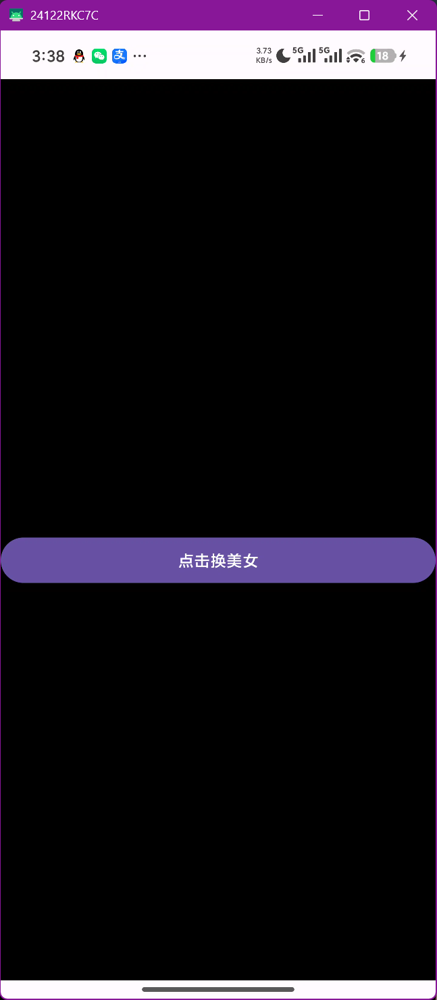
编写 Java 交互逻辑
先把准备好的图片复制到 res/drawable 目录。然后回到 MainActivity.java，按照“绑定布局、找到控件、监听点击、切换资源”的顺序编写逻辑。
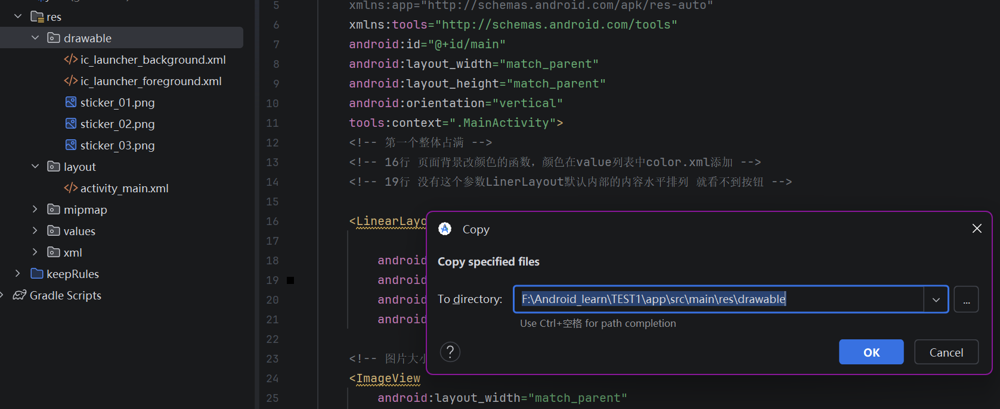
第一步：绑定页面布局。
package com.example.test_1;
import android.os.Bundle;
import androidx.activity.EdgeToEdge;
import androidx.appcompat.app.AppCompatActivity;
import androidx.core.graphics.Insets;
import androidx.core.view.ViewCompat;
import androidx.core.view.WindowInsetsCompat;
public class MainActivity extends AppCompatActivity {
@Override
protected void onCreate(Bundle savedInstanceState) {
super.onCreate(savedInstanceState);
//执行父类的increate方法，不能删除必须写
setContentView(R.layout.activity_main);
//让java和对应的xml页面对应上 （绑定关系）
}
}第二步：找到按钮并监听点击事件。
package com.example.test_1;
import android.os.Bundle;
import android.view.View;
import android.widget.Button;
import android.widget.Toast;
import androidx.activity.EdgeToEdge;
import androidx.appcompat.app.AppCompatActivity;
import androidx.core.graphics.Insets;
import androidx.core.view.ViewCompat;
import androidx.core.view.WindowInsetsCompat;
public class MainActivity extends AppCompatActivity {
@Override
protected void onCreate(Bundle savedInstanceState) {
super.onCreate(savedInstanceState);
//执行父类的increate方法，不能删除必须写
setContentView(R.layout.activity_main);
//让java和对应的xml页面对应上 （绑定关系）
Button btn = findViewById(R.id.btn01);
//获取到标签对象值，让java通过id找到按钮
btn.setOnClickListener(new View.OnClickListener() {
//“btn，你从现在开始监听用户有没有点你。”
@Override
public void onClick(View v) {
//按钮真正被点击以后，会执行的方法。
Toast.makeText(MainActivity.this,"换下一张",Toast.LENGTH_LONG).show();
//Toast是 Android 提供的一个类 专门用来做这种短暂提示
//.makeText(...) 创建一个文字 Toast
//Toast.makeText(
// MainActivity.this, // 在哪里显示
// "换下一张", // 显示什么
// Toast.LENGTH_LONG // 显示多久
//)
}
});
}
}第三步：找到 ImageView 并显示本地图片资源。
package com.example.test_1;
import android.os.Bundle;
import android.view.View;
import android.widget.Button;
import android.widget.ImageView;
import android.widget.Toast;
import androidx.activity.EdgeToEdge;
import androidx.appcompat.app.AppCompatActivity;
import androidx.core.graphics.Insets;
import androidx.core.view.ViewCompat;
import androidx.core.view.WindowInsetsCompat;
public class MainActivity extends AppCompatActivity {
@Override
protected void onCreate(Bundle savedInstanceState) {
super.onCreate(savedInstanceState);
//执行父类的increate方法，不能删除必须写
setContentView(R.layout.activity_main);
//让java和对应的xml页面对应上 （绑定关系）
Button btn = findViewById(R.id.btn01);
//获取到标签对象值，让java通过id找到按钮
ImageView img = findViewById(R.id.girl);
//定位图片标签
img.setImageResource(R.drawable.sticker_01);
img.setImageResource(R.drawable.sticker_02);
img.setImageResource(R.drawable.sticker_03);
//向图片布局传入图片文件资源
btn.setOnClickListener(new View.OnClickListener() {
//“btn，你从现在开始监听用户有没有点你。”
@Override
public void onClick(View v) {
//按钮真正被点击以后，会执行的方法。
Toast.makeText(MainActivity.this,"换下一张",Toast.LENGTH_LONG).show();
//Toast是 Android 提供的一个类 专门用来做这种短暂提示
//.makeText(...) 创建一个文字 Toast
//Toast.makeText(
// MainActivity.this, // 在哪里显示
// "换下一张", // 显示什么
// Toast.LENGTH_LONG // 显示多久
//)
}
});
}
}为了在每次点击时切换图片，把按钮和图片控件提到成员变量中，并用 idimg 保存当前图片的资源 ID：
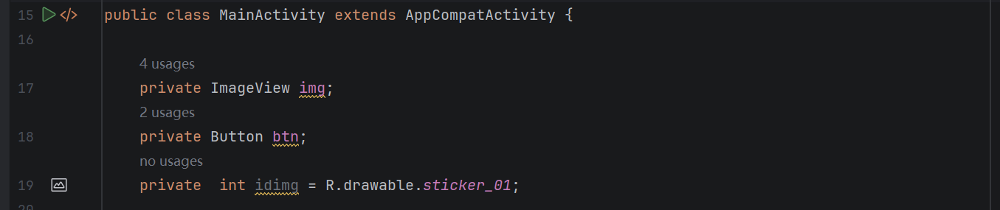
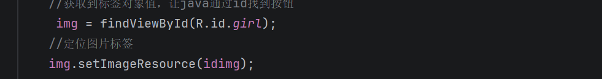
最后在按钮的点击事件中更新 idimg，再调用 setImageResource 刷新图片：
Toast.makeText(MainActivity.this,"换下一张",Toast.LENGTH_LONG).show();
//Toast是 Android 提供的一个类 专门用来做这种短暂提示
//.makeText(...) 创建一个文字 Toast
//Toast.makeText(
// MainActivity.this, // 在哪里显示
// "换下一张", // 显示什么
// Toast.LENGTH_LONG // 显示多久
if (idimg == R.drawable.sticker_01){
idimg = R.drawable.sticker_02;
}else if(idimg == R.drawable.sticker_02){
idimg = R.drawable.sticker_03;
}else{
idimg = R.drawable.sticker_01;
}
img.setImageResource(idimg);到这里，本地图片切换功能已经完成。
加载网络图片
网络请求不能直接放在主线程中执行，否则会阻塞界面，Android 也会抛出异常。加载网络图片前先确认：
- 手机或模拟器可以正常联网。
- 代理配置与当前调试环境一致，避免请求被错误代理。
- 在
AndroidManifest.xml中声明网络权限。
<manifest xmlns:android="http://schemas.android.com/apk/res/android"
xmlns:tools="http://schemas.android.com/tools">
<application
...
</application>
...
<!--加上下面这句话就是给你的app申请手机的上网权限 -->
<uses-permission android:name="android.permission.INTERNET" />
</manifest>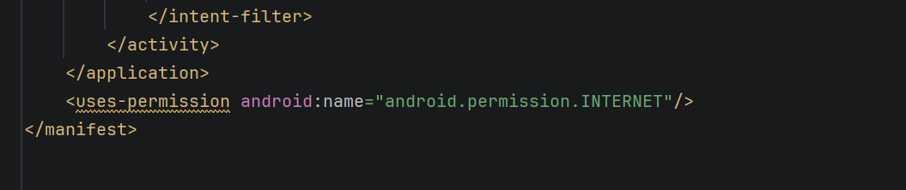
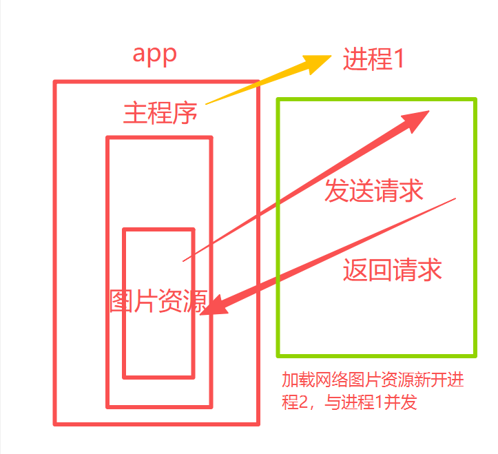
示例图片地址：
先声明控件、当前资源 ID、URL 和 Bitmap。下面是最初的尝试，代码会因为 new URL(...) 可能抛出异常而无法直接通过编译：
private ImageView img;
private Button btn;
private int idimg = R.drawable.sticker_01;
private URL url = null; //创建url对象 = 空
private Bitmap bitmap = null;//专门存放数据资源的类型
protected void onCreate(Bundle savedInstanceState) {
super.onCreate(savedInstanceState);
//执行父类的increate方法，不能删除必须写
setContentView(R.layout.activity_main);
//让java和对应的xml页面对应上 （绑定关系）
btn = findViewById(R.id.btn01);
//获取到标签对象值，让java通过id找到按钮
img = findViewById(R.id.girl);
//定位图片标签
img.setImageResource(idimg);
//向图片布局传入图片文件资源
btn.setOnClickListener(new View.OnClickListener() {
//“btn，你从现在开始监听用户有没有点你。”
@Override
public void onClick(View v) {
//按钮真正被点击以后，会执行的方法。
Toast.makeText(MainActivity.this,"换个网络图片",Toast.LENGTH_LONG).show();
//https://encrypted-tbn0.gstatic.com/images?q=tbn:ANd9GcR_MG6yskM5oGyCXbPzRwc7aAvZ58SVc3lXMMzU1d7mbO0ip2hcnnwfXutA&s=10
url = new URL("https://encrypted-tbn0.gstatic.com/images?q=tbn:ANd9GcR_MG6yskM5oGyCXbPzRwc7aAvZ58SVc3lXMMzU1d7mbO0ip2hcnnwfXutA&s=10");
}
});
}
}因此需要使用 try/catch 处理 URL 格式或访问准备阶段的异常：
public void onClick(View v) {
//按钮真正被点击以后，会执行的方法。
Toast.makeText(MainActivity.this,"换个网络图片",Toast.LENGTH_LONG).show();
//https://encrypted-tbn0.gstatic.com/images?q=tbn:ANd9GcR_MG6yskM5oGyCXbPzRwc7aAvZ58SVc3lXMMzU1d7mbO0ip2hcnnwfXutA&s=10
try {
url = new URL("https://encrypted-tbn0.gstatic.com/images?q=tbn:ANd9GcR_MG6yskM5oGyCXbPzRwc7aAvZ58SVc3lXMMzU1d7mbO0ip2hcnnwfXutA&s=10");
}catch (Exception e){
Toast.makeText(MainActivity.this,"无法访问url",Toast.LENGTH_LONG).show();//按钮报错弹窗
}完整实现中，工作线程负责下载图片，下载完成后再通过 runOnUiThread 回到主线程更新 ImageView：
private ImageView img;
private Button btn;
private int idimg = R.drawable.sticker_01;
private URL url = null; //创建url对象 = 空
private Bitmap bitmap = null;//专门存放数据资源的类型
protected void onCreate(Bundle savedInstanceState) {
super.onCreate(savedInstanceState);
//执行父类的increate方法，不能删除必须写
setContentView(R.layout.activity_main);
//让java和对应的xml页面对应上 （绑定关系）
btn = findViewById(R.id.btn01);
//获取到标签对象值，让java通过id找到按钮
img = findViewById(R.id.girl);
//定位图片标签
img.setImageResource(idimg);
//向图片布局传入图片文件资源
btn.setOnClickListener(new View.OnClickListener() {
//“btn，你从现在开始监听用户有没有点你。”
@Override
public void onClick(View v) {
//按钮真正被点击以后，会执行的方法。
Toast.makeText(MainActivity.this,"换个网络图片",Toast.LENGTH_LONG).show();
//https://encrypted-tbn0.gstatic.com/images?q=tbn:ANd9GcR_MG6yskM5oGyCXbPzRwc7aAvZ58SVc3lXMMzU1d7mbO0ip2hcnnwfXutA&s=10
try {
url = new URL("https://encrypted-tbn0.gstatic.com/images?q=tbn:ANd9GcR_MG6yskM5oGyCXbPzRwc7aAvZ58SVc3lXMMzU1d7mbO0ip2hcnnwfXutA&s=10");
//对url网址发送网络请求
requestImage(url);
}catch (Exception e){
Toast.makeText(MainActivity.this,"加载图片资源失败",Toast.LENGTH_LONG).show();
Log.e("MainActivity","网络资源加载失败");//记录日志
}
}
});
}
private void requestImage(URL url){//开启线程做网络加载
new Thread(){
@Override
public void run() {
//线程逻辑的代码位置，现在线程需要加载网络图片
try {
bitmap = BitmapFactory.decodeStream(url.openStream());
//下载完了更新ui，也就是更新页面
showImage();
}catch (Exception e) {
Log.e("MainActivity","网络资源请求发送失败，加载图片请求失败",e);
}
}
}.start();
}
private void showImage(){
runOnUiThread(new Runnable() {
@Override
public void run() {
//这里写切换到主线程然后干什么
img.setImageBitmap(bitmap);
}
});
}
}打包 APK
功能调试完成后，通过 Android Studio 的构建菜单生成 APK。不同版本的菜单名称和位置可能略有差异，生成后可以在项目的输出目录中找到安装包。
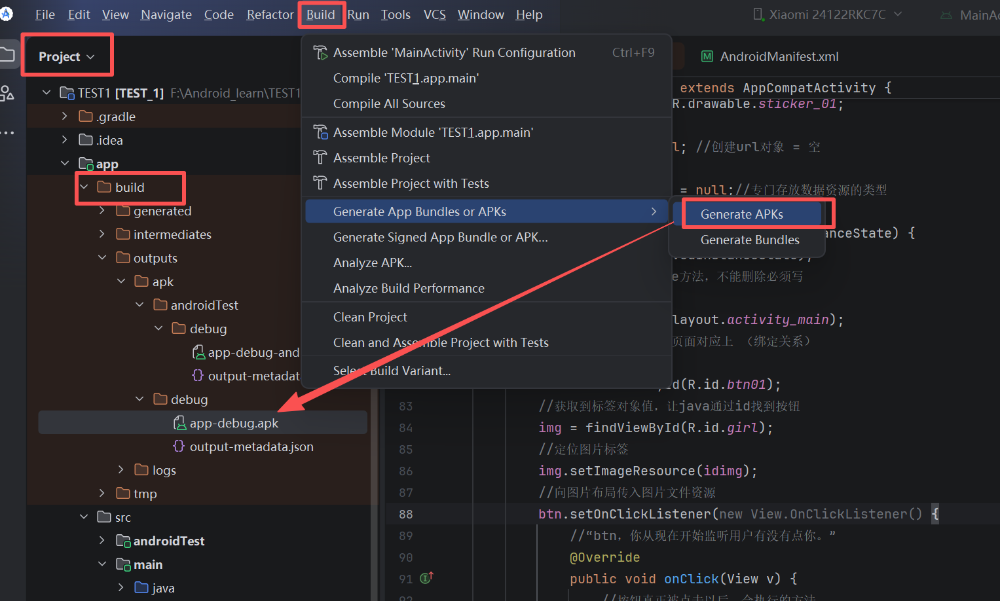